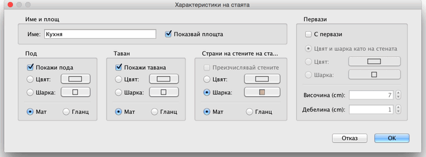

| Промяна на стаите | |||
|
Можете да променяте мястото на стая в плана с мишката,
след като я маркирате. Когато е маркирана една стая в плана, ще се появят индикатори на местата, които можете да "хванете" и местите. Можете също да местите текстовете с името и площта на стаята, ако са видими.
|

|
|
Когато попадне върху някой от тези индикатори,
показалецът
на мишката се променя за да покаже, че сте на мястото, което можете да
"хванете". Когато натиснете бутона на мишката ще се появят подравняващи
линии и ще се активира
магнетизма към местата на пресичане на стените за да ви улесни в
намирането на ъглите на стаята
или други ориентири. Името и 3D атрибутите на една стая могат да бъдат променяни и от нейното меню, появяващо се с двойно цъкане върху стаята в плана, или чрез избирането на План > Промени стая... след като я маркирате.  В менюто на стаята Вие можете да промените името на
маркираната стая и дали площта и да се изобразява в плана. |
|